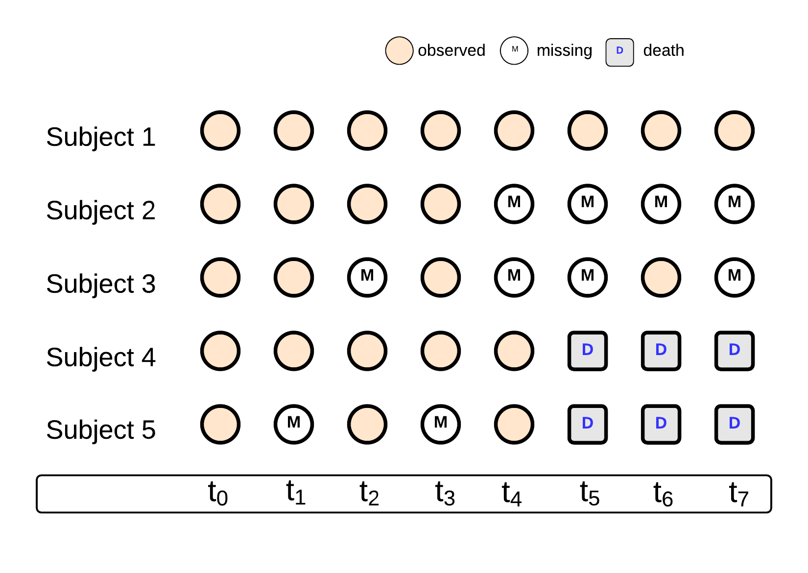
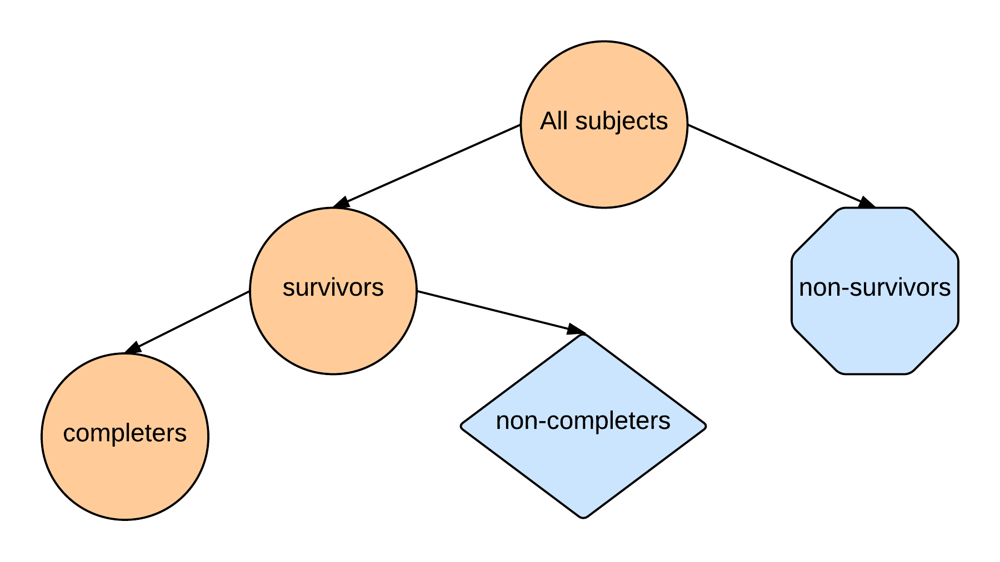
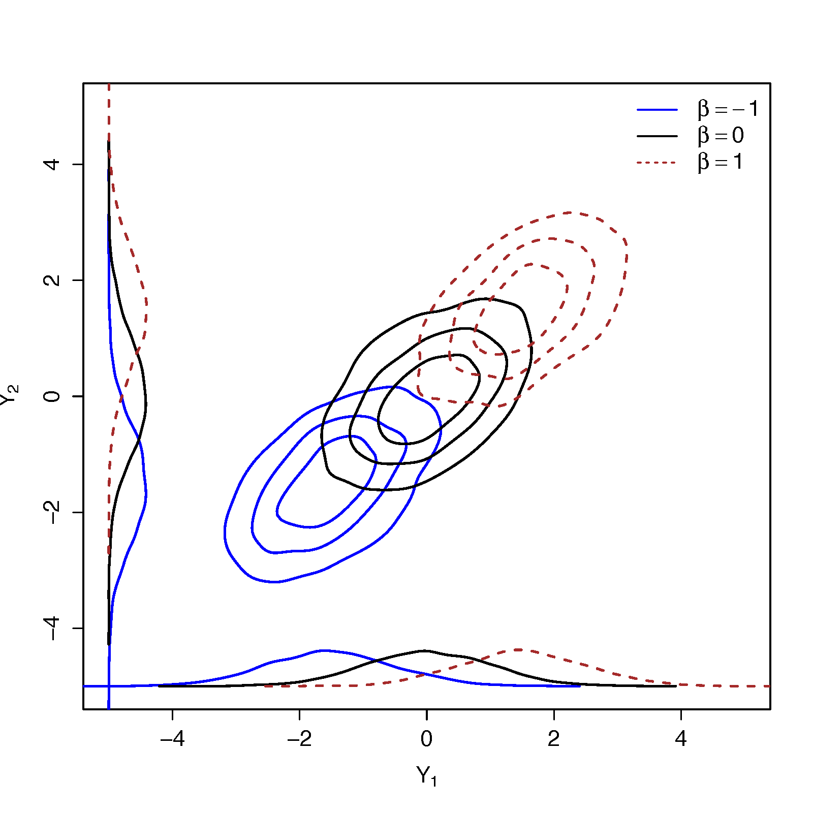
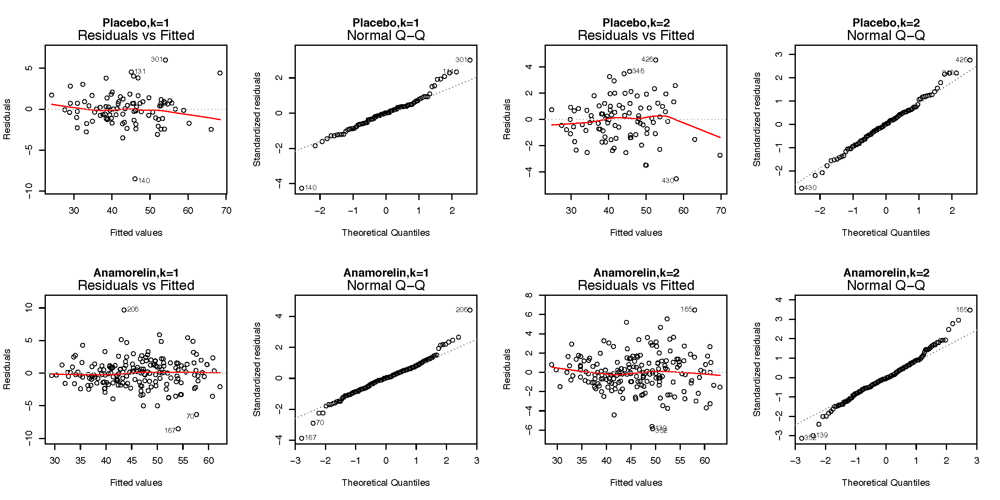
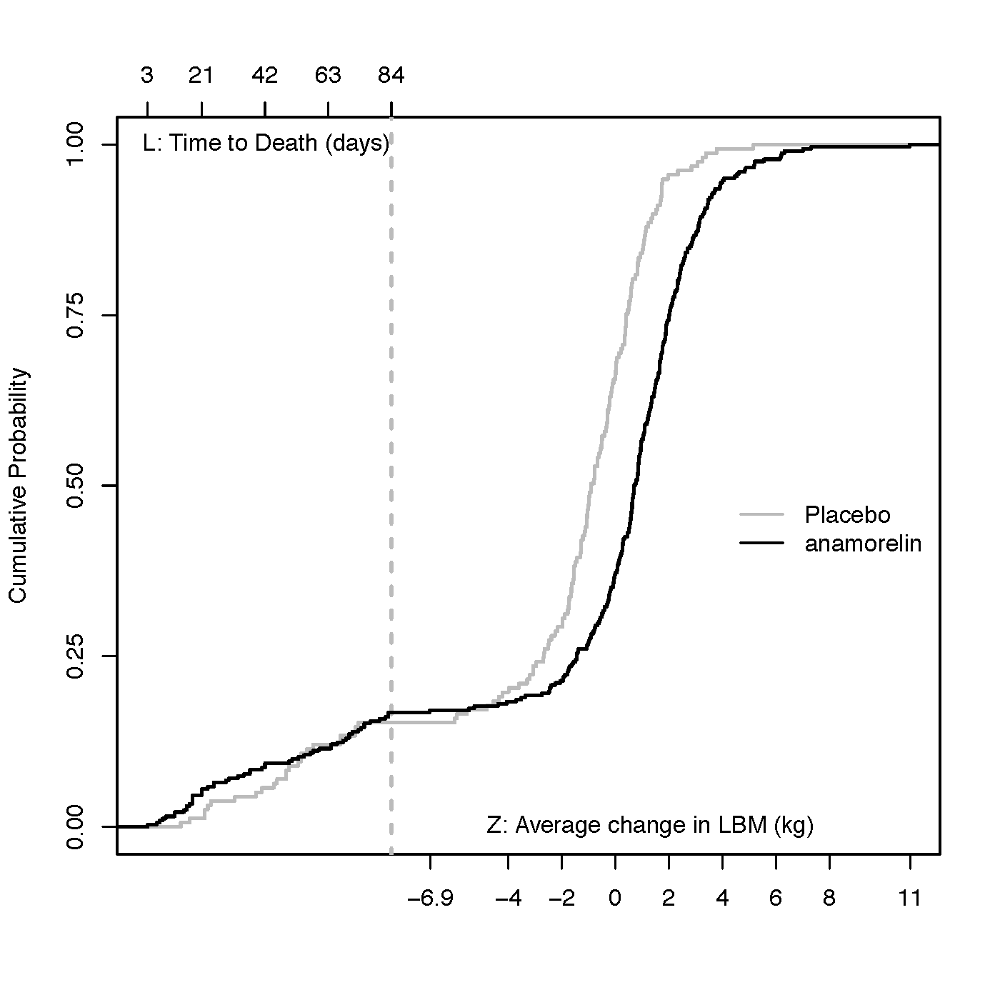
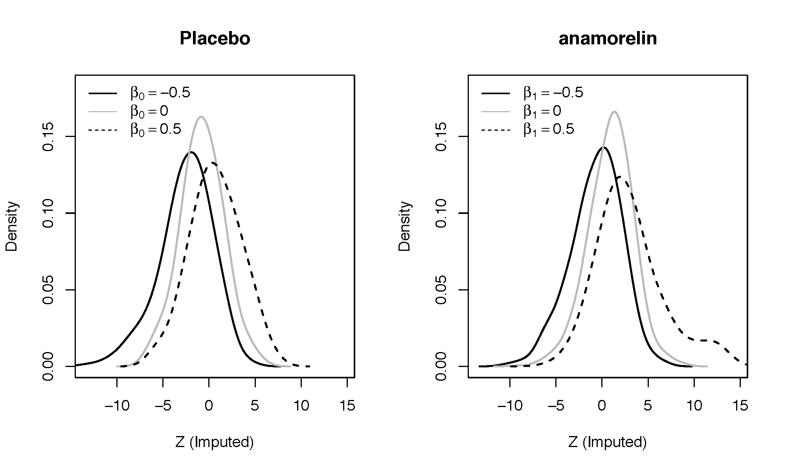
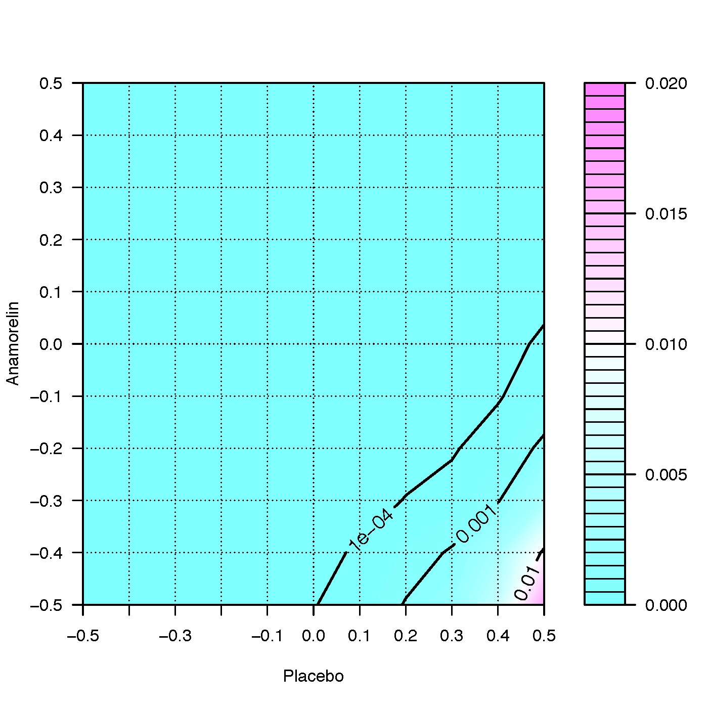
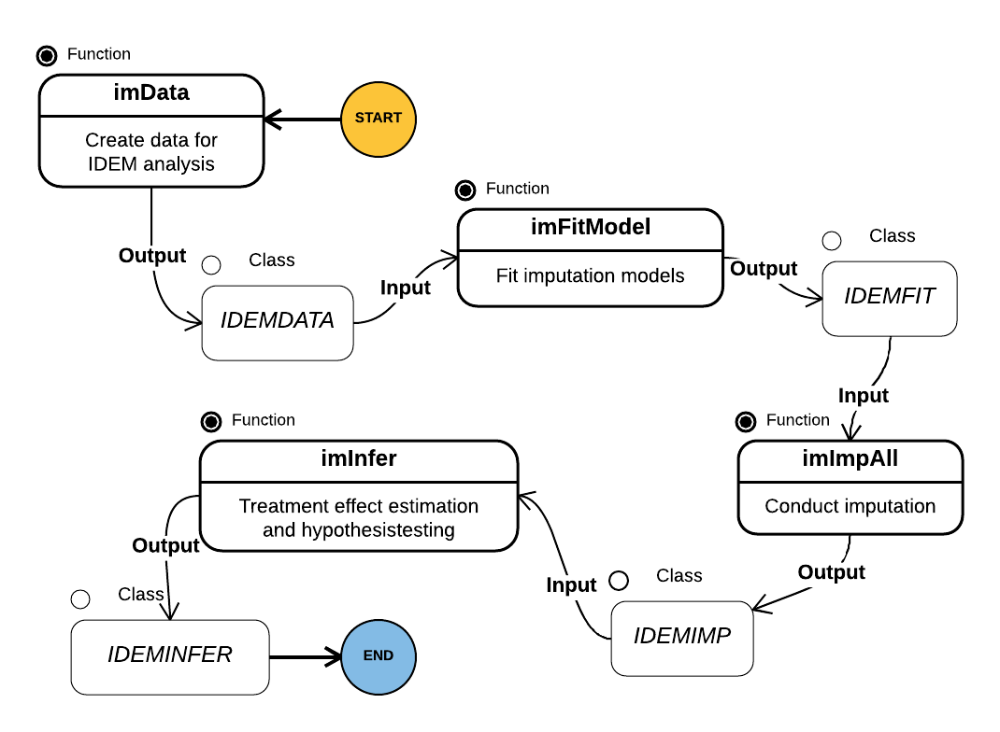

Total Product Life Cycle of Statistical Research with A Case Study on Incomplete Data Analysis
Regeneron Pharmaceuticals, Inc.
Created: 2018-06-26 Tue 13:18
Total Product Life Cycle
Total Product Life Cycle
- Total Product Life Cycle (TPLC) is the process from the concept and design of a product through commercialization and ongoing safety monitoring
- FDA/CDRH TPLC database integrates premarket and postmarket information about medical devices, including information from Premarket Approvals (PMA), Premarket Notifications (510[k]), Adverse Events, and Recalls
What is the TPLC of statistical research?
- Identify a problem
- Develop a method to solve the problem
- Disseminate the solution
Case Study: Incomplete data
General setting
- Consider a randomized clinical study
- Outcomes scheduled to be measured at pre-specified time points after randomization
- Goal: To evaluate the efficacy of a treatment
- Issue: Clinical evaluations unobserved due to
- lost to follow up
- withdraw of consent
- out-of-window visit
- death

Figure 1: Scenarios of incomplete data
Solution
- Evaluate treatment effects conditional on survival
- Evaluate causal treatment effects for principal stratum
- Joint modeling survival and functional outcomes
- Composite endpoint combining survival and functional outcomes
- Primary endpoint: defined as a composite or a mix of both the survival and the functional (longitudinal) outcomes
- Simple and useful if the composite endpoint
- is of clinical interest
- can be ordered in a meaningful way
- Effects of treatment on survival and on the functional outcome cannot be separated
Research goal
- To propose a composite endpoint approach that handles both deaths and intermittent missing data among subjects alive at the assessment times
Method: Endpoint and Test
Notation
- \(T=0,1\): treatment assignment
- \(Y_0\): baseline measure at \(t_0\)
- \(Y_1, \ldots, Y_K\): post-randomization outcomes at \(t_1, \ldots, t_K\)
- \(L\): survival time
- \(A_k=I(L>t_k)\): survival status at \(t_k\)
- \(Z=g(Y_0,\ldots,Y_K)\): primary functional endpoint
- e.g. \(Z=Y_K\), \(Z=Y_K-Y_0\)
- only defined when \(A_K=1\)
- For subjects alive at the end of the study (\(A_K=1\))
- \(\tau_k\): missingness indicator of \(Y_k\) (1: observed, 0: missing)
- \(S=(\tau_1, \ldots, \tau_K)\): missing pattern
- \(Y_{obs}=\{Y_k: \tau_k=1, k \geq 1\}\): observed functional outcome
- \(Y_{mis}=\{Y_k: \tau_k=0, k \geq 1\}\): missing functional outcome
- \(X\): baseline covariates
- \(\overline{Y}_k\): \((Y_1,\ldots,Y_k)\)
Specification
- Consider the primary endpoint to be a finite-valued random variable \(U\)
- \(U\) assigns a score to each subject
- For subjects who die prior to the end of the study, \(t_K\)
- score assigned according to their survival time \(L\)
- shorter survival times assigned with lower scores
- For subjects who survive past \(t_K\)
- score assigned according to their functional status \(Z\)
- score higher than those who died prior to \(t_K\)
- lower functional status assigned with lower scores
Ranking examples
- \(A_{K,i}=A_{K,j}=1\)
- \(Z_i > Z_j\): subject \(i\) ranked better than subject \(j\)
- \(Z_i=Z_j\): subjects \(i\) and \(j\) ranked the same
- \(A_{K,i}=A_{K,j}=0\)
- \(L_i > L_j\): subject \(i\) ranked better than subject \(j\)
- \(L_i=L_j\): subjects \(i\) and \(j\) ranked the same
- \(A_{K,i}=1\), \(A_{K,j}=0\)
- subject \(i\) ranked better than subject \(j\)
Treatment effect
- Let subject \(i\) and \(j\) represent a random sample randomized to \(T=0\) and \(T=1\), respectively
- Define the treatment effect parameter \(\theta\) to be
\[\theta = P(U_i < U_j) - P(U_i > U_j) \]
- the probability that the outcome for a random individual randomized to treatment \(T=0\) is less than the outcome of a random individual randomized to treatment \(T=1\)
- minus
- the probability that the outcome for a random individual randomized to treatment \(T=0\) is greater than the outcome of a random individual randomized to treatment \(T=1\)
Estimation of \(\theta\)
In the absence of missing data, estimate \(\theta\) by \[ \widehat{\theta} = \frac{1}{n_0 n_1} \sum_{i: T_i=0} \sum_{j : T_j=1} \{ I(U_i < U_j) - I(U_i > U_j) \} \] where \(n_0 = \sum_i (1-T_i)\) and \(n_1 = \sum_i T_i\)
Quantiles
- Quantiles (e.g. median) of the composite endpoint may further quantify the treatment effect
- Clinically easier to be interpreted
- A necessary supplement to the primary rank analysis
Method: Missing data Imputation
Scheme

Benchmark assumptions
\[f(Y_{mis} | A_K=1,Y_{obs}, Y_0, X, T,S=s) = f(Y_{mis} | A_K=1, Y_{obs}, Y_0, X, T, S=\mathbf{1}) \qquad \forall s \neq \mathbf{1} \]
- \(\mathbf{1}\): a \(K\)-dimensional vector of \(1\)'s
- \(S=\mathbf{1}\): completers
- Complete case missing value (CCMV) restrictions
- Applied to the missing data patterns for patients alive at \(t_K\)
- Peter
- on the treatment arm
- male, age 50
- \(Y_1=10\) and \(Y_3=50\)
- \(Y_2\) missing
- Peter's group
- on the treatment arm
- male, age 50
- \(Y_1=10\) and \(Y_3=50\)
- \(Y_2\) observed
- Benchmark assumption
- Peter's \(Y_2\) follows the same distribution as the \(Y_2\)'s from Peter's group
Modeling strategy
- Sequential factorization \[f(\overline{Y}_K | A_K=1, Y_0,X,T,S=\mathbf{1}) = \prod_{k=1}^K f(Y_k|A_K=1, \overline{Y}_{k-1}, X, T, S=\mathbf{1})\]
- Specify
\[Y_k|\overline{Y}_{k-1}, Y_0, X, T=t, S=\mathbf{1} =
\mu_{k,t}(\overline{Y}_{k-1}, Y_0, X; \alpha_{k,t}) + \epsilon_{k,t} \]
- \(\mu_{k,t}\): mean function, e.g. \[\mu_{k,t}(\overline{Y}_{k-1}, Y_0, X; \alpha_{k,t}) =\alpha_{k,t,0} + \alpha_{k,t,1} \overline{Y}_{k-1} + \alpha_{k,t,2} Y_0 + \alpha_{k,t,3} X\]
- \(\epsilon_{k,t}\): residuals
Estimation
- \(\alpha_{k,t}\): estimated using least square estimator \[\widehat{\alpha}_{k,t} = \text{argmin} \left \{ \sum_{i=1}^n I(T_i=t) A_{K,i} \left( \prod_{k=1}^K \tau_{k,i} \right) \epsilon_{k,t,i}^2 \right \} \]
- \(\epsilon_{k,t} \sim F_{k,t}\)
- \(F_{k,t} = N(0, \sigma^2_{k,t})\) under normality assumption
- \(F_{k,t}\) estimated by kernel density estimator, e.g. \[ \widehat{f}_{k,t} (x) \propto \sum_{i=1}^n I(T_i=t) A_{K,i} \left( \prod_{k=1}^K \tau_{k,i} \right) \phi \left ( {x - \epsilon_{k,t,i} \over h} \right )\] where \(h\) is the bandwidth
Numerical sampling
- Goal: to draw samples of \(Y_{mis}\) for each individual with \(A_K=1\) and \(S \neq \mathbf{1}\) from \[f(Y_{mis} | A_K=1,Y_{obs}, Y_0, X, T,S=s) \propto f(Y_{mis} | A_K=1, Y_{obs}, Y_0, X, T, S=\mathbf{1})\]
- Numerical sampling necessary in general
- Propose to apply random-walk Metroplis-Hastings algorithm for drawing samples
- Set \(j=0\). Choose arbitrary initial values for \(Y_{mis}\), denoted by \(Y_{mis}^{(0)}\). Let \(Z^{(0)}\) be the primary functional endpoint with data \((Y_{obs},Y_{mis}^{(0)})\)
- Set \(j=j+1\)
- Generate \(Y_{mis}'\) from a (multivariate) Gaussian distribution with mean \(Y_{mis}^{(j-1)}\) and variance \(\Sigma\)
Calculate the acceptance ratio as
\begin{align*} a =& { f(Y'_{mis} | A_K=1,Y_{obs}, Y_0, X, T,S=\mathbf{1}) \over f(Y^{(j-1)}_{mis}|A_K=1,Y_{obs}, Y_0, X, T,S=\mathbf{1})} \\ =& { f(Y'_{mis}, Y_{obs}| A_K=1, Y_0, X, T,S=\mathbf{1}) \over f(Y^{(j-1)}_{mis}, Y_{obs}| A_K=1, Y_0, X, T,S=\mathbf{1})} \end{align*}where \(Z'\) and \(Z^{(j-1)}\) are the primary functional endpoints with data \((Y_{obs},Y_{mis}')\) and \((Y_{obs},Y_{mis}^{(j-1)})\), respectively
- Accept \(Y_{mis}^{(j)} = Y'_{mis}\) with probability \(\min(1,a)\) and \(Y_{mis}^{(j)} = Y^{(j-1)}_{mis}\) with probability \(1-\min(1,a)\)
- Repeat Steps 2-5 until the Markov chain converges
- Draw random samples from the set \(\{Y_{mis}^{(j_0)}, Y_{mis}^{(j_0+1)}, \ldots\}\) as the imputed missing values, where \(j_0\) corresponds to the number of burn-in
Multiple imputation
- Draw \(M\) copies \(Y_{mis}\) for each individual with \(A_K=1\) and \(S\neq \mathbf{1}\)
- Create \(M\) complete datasets
- For each complete dataset \(m\), estimate \(\theta\) by \(\widehat{\theta}_m\)
- Overall estimator of \(\theta\) \[\tilde{\theta} = \frac{1}{M} \sum_{m=1}^M \widehat{\theta}_m\]
- Confidence intervals constructed by non-parametric bootstrap
Method: Sensitivity Analysis
Sensitivity analysis
- Benchmark assumptions (CCMV) untestable
- Sensitivity analysis essential to evaluate the robustness of inferences to deviations from benchmark assumptions
Exponential tilting
- Exponential tilting model \[f'(y) \propto e^{\beta y} f(y)\]
- Constructs a neighborhood of distributions \(f'(y)\)
- centered around \(f(y)\)
- indexed by sensitivity parameter \(\beta\)
Example
- \(f(y)\) multivariate normal \[Y \sim N(\mu, \Sigma)\]
- Close form can be derived for \(f'(y)\) \[Y' \sim N(\mu+\Sigma \beta, \Sigma)\]

Dimension of sensitivity parameters
Recall: benchmark assumptions
\begin{align*} f(Y_{mis} | A_K=1, &Y_{obs}, Y_0, X, T=t,S=s) \\ = & f(Y_{mis} | A_K=1, Y_{obs}, Y_0, X, T=t, S=\mathbf{1}) \end{align*}Sensitivity parameters typically introduced as follows:
\begin{align*} f(Y_{mis} | A_K=1, &Y_{obs}, Y_0, X, T=t,S=s) \\ \propto & \exp \{\beta_{t,s} Y_{mis}\} f(Y_{mis} | A_K=1, Y_{obs}, Y_0, X, T=t, S=\mathbf{1}) \end{align*}- Sensitivity parameters \(\beta_{t,s}\)
- depends on treatment and missing pattern
- dimension too high
- difficult to set sensitivity analysis scenarios
- difficult to interpret and summarize results
Sensitivity analysis assumption
- \(Z\): primary endpoint, clinical interest
- \(\beta_t\): treatment specific, dimension 2 regardless of \(K\)
- \(\beta_t=0\): benchmark assumptions
- \(|\beta_t|\): distance (in the units of \(Z\)) from benchmark assumptions
Example
- Peter
- on the treatment arm
- male, age 50
- \(Y_1=10\) and \(Y_3=50\)
- \(Y_2\) missing
- Peter's group
- on the treatment arm
- male, age 50
- \(Y_1=10\) and \(Y_3=50\)
- \(Y_2\) observed
- Benchmark assumption
- Peter's \(Y_2\) follows a distribution that is centered at the \(Y_2\)'s from Peter's group with shifts quantified by sensitivity parameters
Method: Application
A clinical study
- Randomized, double-blind, placebo-controlled Phase III study
- Intent-to-treat population: advanced non-small cell lung cancer subjects
- To evaluate the efficacy of a drug
- Functional outcome lean body mass (LBM) scheduled to be measured at baseline (\(Y_0\)), 6 weeks (\(Y_1\)) and 12 weeks (\(Y_2\))
- Primary functional endpoint: \(Z={(Y_2+Y_1) \over 2} - Y_0\)
Death and missingness
| Placebo | Drug | |
| \(n=157\) | \(n=322\) | |
| Died Prior to Wk 12 | 24 (15.3%) | 54 (16.8%) |
| Survivors with complete data | 93 (59.2%) | 185 (57.5%) |
| Survivors missing only Wk 6 | 3 (1.9%) | 17 (5.3%) |
| Survivors missing only Wk 12 | 17 (10.8%) | 31 (9.6%) |
| Survivors missing both Wks 6, 12 | 20 (12.7%) | 35 (10.9%) |
Baseline covariates
| Covariates | Levels |
| ECOG | 0:\(\{0,1\}\), 1:\(\{2\}\) |
| AGE | 0:\(\leq 65\), 1:\(>65\) |
| GENDER | 0:M, 1:F |
| BMI | 0:\(\leq 18.5\), 1:\(> 18.5\) |
| WEIGHT LOSS | 0:\(\leq 10\%\), 1:\(> 10\%\) (in 6 months prior) |
| Y0 | Continuous |
Model
Specify \(\mu_{k,t}(\overline{Y}_{k-1}, Y_0, X; \alpha_{k,t})\) as follows:
Model fitting diagnosis

Analysis under benchmark assumptions
- 10 imputed datasets generated
1000 bootstrap samples
| \(\widehat{\theta}\) (95% CI) | p-value | |
| Result | 0.30(0.19,0.40) | \(<0.0001\) |
| \(\widehat{p}_{50}\) (95% CI) | ||
| Result | Drug | 0.67( 0.45, 0.89) |
| Placebo | -0.92(-1.43,-0.28) |
Cumulative Plot

Choice of sensitivity parameters

Result

Conclusion
- There is a significant difference between the Placebo and the investigational arms in their composite endpoints of survival and average LBM change
- The difference favors the investigational arm
Method: Summary
Summary
- Propose a composite endpoint approach for evaluating treatment effects in randomized clinical trials with death and intermittent missingness
- Apply complete case missing-variable restrictions for handling missing data in survivors
- Apply exponential tilting model for sensitivity analysis
- Introduce a parsimonious way of introducing sensitivity parameters
Software for Statisticians
Raw code
R code
##table of missing pattern
get.mis.table <- function(data.all, duration, vtrt, vsurv, voutcome, trt.len=NULL) {
a.trt <- get.trt(data.all[,vtrt]);
mis.pat <- get.miss.pattern(length(voutcome));
if (is.null(trt.len)) {
trt.len <- paste(toupper(vtrt), "=", a.trt, sep="");
}
rst <- NULL;
for (i in 1:length(a.trt)) {
subg <- data.all[which(a.trt[i] == data.all[,vtrt]),
c(vsurv, voutcome)];
nsub <- nrow(subg);
cur.alive <- subg[which(subg[,vsurv] > duration),voutcome];
n.dead <- nsub-nrow(cur.alive);
cur.y <- !is.na(cur.alive);
inx.y <- table(1+get.compose(cur.y));
n.p <- rep(0, nrow(mis.pat));
names(n.p) <- rownames(mis.pat);
n.p[names(inx.y)] <- inx.y;
char.rst <- sapply( c(n.dead, n.p), function(x) { sprintf("%i(%5.2f%%)", x, 100*x/nsub)});
char.rst <- c(char.rst, nsub);
rst <- cbind(rst, char.rst);
}
rst <- cbind(rbind("", mis.pat, ""), rst);
colnames(rst) <- c(paste(voutcome, "Observed", sep=" "), trt.len);
rownames(rst) <- c("Deaths on study",
paste("S=", 1:nrow(mis.pat), sep=""),
"Total");
rst
}
C code
//order two subjects
void rankij(double *s1, double *z1, double *s2, double *z2,
double *duration, double *cuts, double *cutz, int *rst) {
double tmp;
//both alive
if ((*s1 > *duration) && (*s2 > *duration)) {
tmp = *z1 - *z2;
if (tmp > *cutz) {
*rst = 1;
} else if (tmp < -*cutz) {
*rst = -1;
} else {
*rst = 0;
}
} else if ((*s1 <= *duration) && (*s2 <= *duration)) {
tmp = *s1 - *s2;
if (tmp > *cuts) {
*rst = 1;
} else if (tmp < -*cuts) {
*rst = -1;
} else {
*rst = 0;
}
} else {
if (*s1 > *duration) {
*rst = 1;
} else {
*rst = -1;
}
}
}
STAN code
data {
int NY; //total no. y
int NOBS; //no of observed y
vector[NOBS+1] YOBS; //add dummy y to handle nobs=0
int NX; //no. covariates
vector[NX] X; //covariates
matrix[NY, NX+3] COEF; //coefficents 1st column is sigma
int IMIS[NY];
int INX[NY];
//residuals
int ASSUMENORMAL;
int NRES;
matrix[NRES,NY] RESIDUAL;
real H[NY];
}
transformed data {
int NMIS;
real MU[NY];
real SIGMA[NY];
NMIS = NY - NOBS;
for (i in 1:NY) {
SIGMA[i] = COEF[i, 1];
MU[i] = COEF[i, 2];
//covariates
for (k in 1:NX) {
MU[i] = MU[i] + X[k] * COEF[i, 3+k];
}
}
}
parameters{
vector[NMIS] YMIS;
}
model {
YMIS ~ cond(YOBS, COEF, NY, MU, SIGMA, IMIS, INX, ASSUMENORMAL, NRES, RESIDUAL, H);
}
Challenge
- Difficult to share the code with others
- No documentation
- No guidance
- Complicated configuration
- Need to know STAN
R package
- Re-Organize the functions
- Add detailed documentation
- Incorporate the C code
- Incorporate the STAN code
- Provide examples
Development
Re-Organized Code

#' Treatment effect estimation
#'
#' Estimate treatment effect and median of the composite endpoint from using
#' imputed data
#'
#' @inheritParams imPlotCompleters
#' @inheritParams imPlotImputed
#'
#' @param quantiles Quantiles of the composite endpoint to be reported
#'
#' @param ... Options for ranking subjects using the composite endpoint
#' \describe{
#' \item{cut.z}{Clinically meaningful difference in the functional outcome}
#' \item{cut.surv}{Clinically meaningful difference in survival time}}
#'
#' @return A class \code{IDEM.RST} list contains
#' \describe{
#' \item{list.var}{List of parameters}
#' \item{theta}{A dataset with columns \code{Delta0}, \code{Delta1}, \eqn{\hat{\theta}}}
#' \item{quantiles}{ A dataset with columns \code{Delta}, \code{Trt}, \code{Quantiles}}
#' \item{survivor}{A dataset for survivors with columns \code{Delta0}, \code{Delta1}, \code{Mean0},
#' \code{Mean1}, \code{Diff}}}
#'
#' @examples
#' \dontrun{
#' lst.var <- list(trt="TRT", surv="SURV", outcome=c("Y1","Y2"), y0=NULL,
#' endp=c("Y2"), unitTime="days",
#' trt.label = c("UC+SBT", "SAT+SBT"),
#' cov=c("AGE"), endfml="Y2", duration=365, bounds=c(0,100));
#' rst.fit <- imFit(abc, lst.var);
#' rst.imp <- imImpAll(abc, rst.fit, lst.var, deltas=c(-0.25,0,0.25),
#' normal=TRUE, iter=300, n.imp=2, thin=10, p.scale=10);
#' rst.est <- imEstimate(rst.imp, quantiles=c(0.25,0.5,0.75));}
#'
#' @export
#'
imEstimate <- function(imp.rst,
quantiles=0.5,
...) {
if (is.null(imp.rst))
return(NULL);
stopifnot(any(class(imp.rst) == get.const("IMP.CLASS")));
lst.var <- imp.rst$lst.var;
imp.data <- imp.rst$complete;
deltas <- imp.rst$deltas;
n.imp <- imp.rst$n.imp;
vtrt <- lst.var$trt;
duration <- lst.var$duration;
vsurv <- lst.var$surv;
##trt arms
atrt <- sort(unique(imp.data[, vtrt]));
##not imputed subjects
sub.noimp <- imp.data[is.na(imp.data$IMP),,drop=FALSE];
ready.noimp <- get.data.ready(sub.noimp, lst.var, atrt);
rst.median <- NULL;
rst.rank <- NULL;
for (i in 1:n.imp) {
tmp.lst <- rep(list(NULL), length(deltas));
for (j in 1:length(deltas)) {
cur.data <- subset(imp.data, imp.data$DELTA == deltas[j] & imp.data$IMP == i);
cur.ready <- get.data.ready(cur.data, lst.var, atrt);
tmp.lst[[j]] <- rep(list(NULL), length(atrt));
for (k in 1:length(atrt)) {
tmp.lst[[j]][[k]] <- rbind(ready.noimp[[k]], cur.ready[[k]]);
c.med <- get.median(tmp.lst[[j]][[k]], duration, quantiles=quantiles, ...);
rst.median <- rbind(rst.median,
cbind(i, deltas[j], atrt[k], c.med));
}
}
for (t1 in 1:length(deltas)) {
for (t2 in 1:length(deltas)) {
cur.rank <- c.rankall(tmp.lst[[t1]][[1]],
tmp.lst[[t2]][[2]],
duration, ...);
rst.rank <- rbind(rst.rank,
c(i, deltas[t1], deltas[t2], cur.rank));
}
}
}
colnames(rst.median) <- c("Imputation", "Delta", "TRT", "Q", "QuantSurv", "QuantY");
colnames(rst.rank) <- c("Imputation", "Delta0", "Delta1", "Theta");
##median of median
dfmedian <- data.frame(rst.median);
dfmedian$Quant <- get.comp(dfmedian$QuantY, dfmedian$QuantSurv, lst.var$duration);
dfmedian <- sqldf('select * from dfmedian order by Delta, Trt, Q, Quant');
inx.median <- ceiling(n.imp/2);
median.median <- dfmedian[seq(inx.median, nrow(dfmedian), by=n.imp),
c("Delta", "TRT", "Q", "QuantY", "QuantSurv")];
inx.2 <- which(median.median$QuantSurv <= lst.var$duration);
if (length(inx.2) > 0) {
median.median[inx.2, "QuantY"] <- NA;
median.median[-inx.2, "QuantSurv"] <- NA;
}
##average rank
dfrank <- data.frame(rst.rank);
avg.rank <- sqldf('select Delta0, Delta1, avg(Theta) as Theta
from dfrank group by Delta1, Delta0');
##survivor functional means
dalive <- imp.data[imp.data[,vsurv] > duration, , drop=FALSE];
rst.survivor <- NULL;
if (nrow(dalive) > 0) {
##there exist survivors
endp <- get.const("TXT.ENDP");
txt.sql <- paste("select delta, trt, avg(endp) as Mean",
"from (select distinct delta, ", vtrt, " as trt, ID,",
"avg(", endp, ") as endp",
"from dalive group by delta, ID) group by delta, trt",
sep=" ");
survtrt <- sqldf(txt.sql);
survtrt.t0 <- survtrt[seq(1, nrow(survtrt)-1, 2), c("delta", "Mean")];
survtrt.t1 <- survtrt[seq(2, nrow(survtrt), 2), c("delta", "Mean")];
ndelta <- nrow(survtrt.t0);
rst.survivor <- cbind(survtrt.t0[ rep(1:ndelta, each = ndelta),],
survtrt.t1[ rep(1:ndelta, ndelta),]);
colnames(rst.survivor) <- c("Delta0", "Mean0", "Delta1", "Mean1");
rst.survivor <- data.frame(rst.survivor);
rst.survivor$Diff <- rst.survivor$Mean1 - rst.survivor$Mean0;
}
rst <- list(lst.var=lst.var,
quantiles=median.median,
theta=avg.rank,
survivor=rst.survivor,
raw.theta=rst.rank,
raw.quantiles=rst.median);
class(rst) <- get.const("RST.CLASS");
rst
}
Incorporate External Code

Final Product
- A single
tarfile - Can be download and installed from online for
- 32-bit Windows
- 64-bit Windows
- Mac OS
- Unix
- With detailed help file
Script Mode Demo
install.packages("idem");
require(idem);
head(abc);
help("idem-parameters", package=idem);
lst.var <- list(trt = "TRT", surv = "SURV", outcome = c("Y1","Y2"),
y0 = NULL, endp = c("Y2"), unitTime = "days",
trt.label = c("UC+SBT", "SAT+SBT"), cov = c("AGE"), endfml = "Y2",
duration = 365, bounds = c(0,100));
is.null(imChkPars(abc, lst.var));
imMisTable(abc, lst.var);
imPlotCompleters(abc, lst.var);
imPlotMisPattern(abc, lst.var);
imPlotSurv(abc, lst.var);
rst.fit <- imFitModel(data.all = abc, lst.var = lst.var);
rst.mixing <- imImpSingle(abc[1,], rst.fit,
chains = 4, iter = 2000, warmup = 1000);
rst.imp <- imImpAll(abc, rst.fit, deltas = seq(-0.2,0.2,0.05),
n.imp = 5, normal = TRUE, chains = 4, iter = 5000, warmup = 1000);
User-Friendly Software
Graphical User Interface
- Many options
- Web-Based GUI is platform independent
Shiny
- Allow statisticians to develop web pages without knowledge of HTML, Java Script, CSS, etc.
- Allow users to fully use existing statistical code
- Optimized for computation efficiency
- Ideal for interactive applications
Plan
- Build a web application based on the R package
- Develop web pages and server files
- Deploy the application
Web Pages
list(
msg.box("On this page, you will specify inputs for the imputation and estimation procedures."),
wellPanel(h4("General Imputation Settings"),
fluidRow(
column(3,
h6("Number of imputed datasets"),
sliderInput("inNImp", label = "", value=10, min=1, max=20, step=1),
h6("Normality assumption"),
radioButtons(inputId="inNorm", label="", c("Yes"=1, "No"=0))
),
column(3,
h6("Number of bootstrap samples"),
sliderInput(inputId = "inNbs", label = "",
value = 100, min = 5, max = 1000, step=1),
h6("Random seed"),
numericInput(inputId="inSeed", label="", value=0, min=0)),
column(3,
h6("Number of Cores (Parallel Bootstrap)"),
sliderInput("inNcores", label = "", value = 1, min = 1,
max = (parallel::detectCores()-1), step = 1))
)),
wellPanel(
h4("MCMC Paramters"),
msg.box("Specify parameters for Bayesian posterior sampling. The target metropolis
acceptance rate and initial step-size are options for advanced users to
control STAN sampler's behavior. "),
fluidRow(
column(3,
h6("Number of iterations"),
sliderInput(inputId = "mcmciter", label = "",
value = 2000, min = 200, max = 20000, step=100),
h6("Number of burn-in"),
sliderInput("mcmcburnin", label = "", value=1000, min=100, max=20000, step=100)
),
column(3,
h6("Number of thinning"),
sliderInput(inputId = "mcmcthin", label = "", value=2, min=1, max=50, step=1),
h6("Number of chains"),
sliderInput("mcmcchain", label = "", value=4, min=2, max=10, step=1)
),
column(3,
h6("Target Metropolis Acceptance Rate"),
sliderInput("mcmcdelta", label = "", value=0.95, min=0.05, max=1, step=0.05),
h6("Initial Step-size"),
sliderInput("mcmcstepsize", label = "", value=1, min=0.05, max=5, step=0.05)
##h6("Algorithm"),
##radioButtons('mcmcalg', '', c('NUTS', 'HMC', "Fixed_param"))
))),
wellPanel(h4("Sensitivity Parameters and Additional Quantile Output"),
fluidRow(
column(3,
h6("Imputation sensitivity parameters (separate by comma).
Default values set such that the range of the sensitivity
parameters is equal to one-fourth standard deviation of
the distriubtion of functional endpoints among subjects
who do not require their data to be imputed."),
textInput("inSensp", label="", value = get.sd.endp(outVar='ImpSens'))),
column(3,
h6("The median of the composite endpoint for each treatment
will be computed. Below enter additional percentiles of
the composite variable you would like to obtain."),
textInput("inExtras", label="", value=c("25,75"))),
column(3,
h6('SACE Sensitivity Parameter (separate by comma,
values <= 0 are valid). Default values set such that
the range of the sensitivity parameter ranges from 0 to
minus one-half standard deviation of the distribution of
functional endpoints among subjects who do not require
their data to be imputed.'),
textInput("inSACE", label="", value=get.sd.endp(outVar='SACE')))
)),
wellPanel(
h4("Convergence Checking"),
msg.box("Randomly select a subject and check the MCMC sampling convergence"),
actionButton("btnConverge", "Check Convergence", style="info"),
uiOutput('uiImpConv')
)
);
Server files
output$outTblBootQuantiles <- renderTable({
if (0 == input$btnBoot)
return(NULL);
rst <- get.rst.overall();
rst$quantiles;
}, include.rownames=TRUE,
caption = 'Table: Quantiles of Compositve Variable',
caption.placement = getOption("xtable.caption.placement", "top"),
caption.width = getOption("xtable.caption.width", NULL));
## Contour plots
output$outBootContourRank <- renderPlot({
if (0 == input$btnBoot)
return(NULL);
rst <- get.rst.overall();
imPlotContour(rst, plot.title="");
},
width=500,
height=500,
bg="transparent");
##--------------------------------------
##----------Report----------------------
##--------------------------------------
output$uiReport <- renderUI({
if (is.null(get.data())) {
msg.box("Please upload data first.", "warning");
} else if (-1 == userLog$model) {
msg.box("Please validate model first.", "warning");
} else {
wellPanel(h4('Download the analysis report'),
radioButtons('format', '', c('PDF', 'HTML', 'Word')),
downloadButton('btnDload'))
}
})
output$btnDload <- downloadHandler(
filename=function() {
paste('report_',
format(Sys.time(), "%m%d%Y%H%M%S"),
'.',
switch(input$format,
PDF = 'pdf',
HTML = 'html',
Word = 'docx'
),
sep="")
},
content=function(file) {
out <- rmarkdown::render('report/report.Rmd',
switch(input$format,
PDF = rmarkdown::pdf_document(),
HTML = rmarkdown::html_document(),
Word = rmarkdown::word_document()
));
bytes <- readBin(out, "raw", file.info(out)$size);
writeBin(bytes, file);
})
Demo
Appendix
- Demo of a spatial software http://olssol2.shinyapps.io/sapma
Summary
TPLC of statistical research